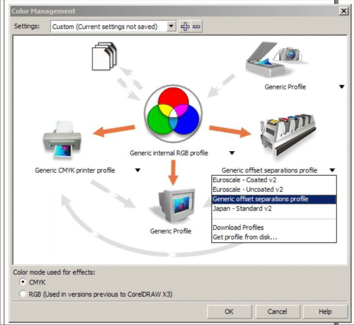

Цветовые профили
Sinto / 11.10.2010, 12:40/00:41
Форум:
Санчо, можно еще вопрос?
Такая вот фигня у меня- с перестановкой компа и винды соответственно на 64-ядрёную ХР в Х3 не могу нужный профиль загрузить. Сначала вообче предлагал только 2 пункта по умолчанию, а после установки Х5 такая картина:
А мне надо U.S. - Web Coated (SWOP) 2 :(
Откуда ее ковырнуть можно?
Спасибо.
Sinto, попробуйте перевести два последних варианта из списка предлагаемых!
Все очевидно - попробуйте купить (скачать) хоть одну книгу по Корелу...
Выбираешь Get from the disk, а затем нужный профиль из папки c:\Program Files (x86)\Corel\CorelDRAW Graphics Suite X5\Color\
marselmarch, да, мне стыдно но не очень. Иногда лучше спросить и выглядеть глупо, но узнать, чем не знать совсем.
Санчо, спасибо ОГРОМНОЕ!!! Как обычно
А зачем вам прфиль для условий печати в США? Или вы как раз оттуда?
он больше всех на правду жизни похож ;)
Бан на неделю!